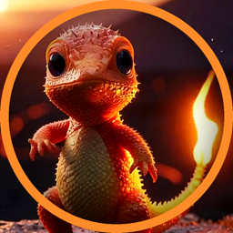
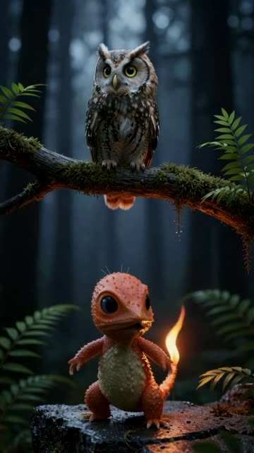
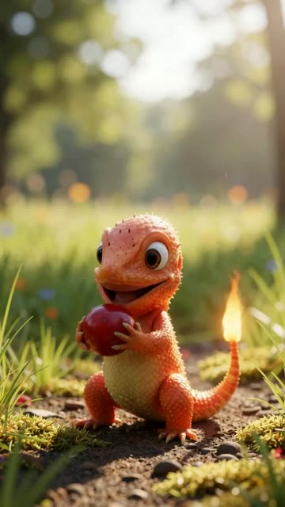
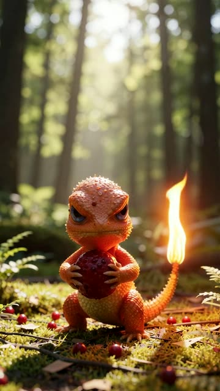

We create AI-generated short-form video and build the tools that automate its production and distribution. Our channels publish original series across YouTube, Instagram, TikTok and X, all produced with an in-house generative pipeline running on local GPU hardware.



Stills from our fan-made creature series (AI-generated, non-official).
AI agents for script drafting, automated episode quality control, analytics and cross-platform publishing — turning a one-person studio into a scalable, agent-driven production system.
Malo Botrel est un studio indépendant de vidéo générée par IA basé à Tours. Nous produisons des séries courtes (dont une série de créatures « fan-made », non officielle) diffusées sur YouTube, Instagram, TikTok et X, grâce à une chaîne de production interne : génération d'images et de vidéos sur GPU local (ComfyUI, modèles open source), bible scénaristique pour la cohérence des personnages, publication automatisée en Python (API YouTube, Buffer), tableau de bord de croissance et tests A/B, et musique originale. Prochaine étape : des agents IA pour l'écriture, le contrôle qualité, l'analyse et la diffusion.